Slide 9 หน้า 17–77 — Multivariate Time Series
ทุกบทก่อนหน้าพยากรณ์ Y จากอดีตของ Y เอง (univariate) แต่ยอดขายขึ้นกับงบโฆษณา และการบริโภคขึ้นกับรายได้ บทนี้เพิ่มตัวแปรอื่นเข้ามา Class 10 สอนจนจบ VAR ในคาบเดียว1 ตัวที่น่าจะมีประโยชน์ที่สุดคือ ARIMAX2 คาบเดียวกันประกาศว่า final 40 คะแนน สอบ onsite 26 พฤศจิกายน และจะได้ข้อสอบเก่า3
| โครงสร้างข้อมูล (สไลด์หน้า 50) | โมเดล | ตัวอย่าง | ตอน |
|---|---|---|---|
| Y ตัวเดียว | ARIMA, ETS | ยอดขายรายเดือน | Lesson 4–10 |
| Y ตัวเดียว + ตัวแปรอธิบาย X ที่รู้ค่าล่วงหน้า | GLS, ARIMAX (สมการเดียว) | ยอดขายกับงบโฆษณาที่บริษัทกำหนดเอง | 1–3 |
| หลายตัวแปรที่ส่งผลต่อกันและต้องพยากรณ์ทุกตัว | VAR (k ตัวแปร k สมการ ทุกตัว "equally important"4) | ราคาหุ้นสี่ตลาด | 4–6 |
ตัวแปรภายนอก (exogenous) คือตัวที่ใช้อธิบาย Y แต่ไม่ได้ถูกพยากรณ์ในโมเดล ARIMAX จึงใช้เมื่อรู้ X ของอนาคต ส่วนราคาหุ้นที่ต่างส่งผลต่อกันใช้ VAR5
OLS สมมติว่า error ของแต่ละวันอิสระกัน เหมือนโยนเหรียญใหม่ทุกวัน แต่ในอนุกรมเวลา ถ้าวันนี้ทายต่ำไป พรุ่งนี้ก็มักทายต่ำไปด้วย error จึงเกาะกลุ่ม
สมัยก่อนสอน Generalized Least Square (GLS) แต่เทอมนี้ไม่สอน6 สไลด์และโค้ดยังอยู่ และเป็นฐานของ ARIMAX เพราะแก้ปัญหาเดียวกัน
ส่วนแรกคือ regression ปกติ ส่วนที่สองบอกว่า error เป็น AR (Lesson 5) แค่ใช้กับ residual แทนข้อมูล ถ้าไม่สนใจโครงสร้างนี้ standard error จะผิด t-test และ p-value ก็ผิดตาม ขั้นตอนคือทำ OLS เก็บ residual ดู ACF/PACF ของ residual ถ้ามี AR ก็ประมาณใหม่ด้วย gls() ของ package nlme
ตัวอย่างนี้มีไว้ให้เห็นว่า ค่าสัมประสิทธิ์จาก OLS กับ GLS แทบเท่ากัน แต่ s.e. ต่างกันเกือบสองเท่า
ข้อมูล revenue.txt มี Y = revenue และ X = growth ACF ของ residual จาก OLS ลดลงหลังทะลุ lag 1–2 ส่วน PACF ทะลุแค่ lag 1 ตามตารางของ Lesson 6 จึงเป็น AR(1) ของ error durbinWatsonTest(model) ยืนยัน: D-W = 0.695 ห่างจากค่าที่ไม่มี autocorrelation (ราว 2) มาก

output ของ gls() ให้ทั้งสัมประสิทธิ์ regression และ φ ของ AR(1) ใน error เทียบกับ OLS ได้ดังนี้
| OLS | GLS (error เป็น AR(1), φ = 0.668) | |
|---|---|---|
| slope ของ growth | 1.610 | 1.652 |
| s.e. | 0.202 | 0.117 |
เขียนโมเดลได้ \(\mathrm{Revenue}_t=35986.21+1.65\,\mathrm{growth}_t+\varepsilon_t\) และ \(\varepsilon_t=0.6681\varepsilon_{t-1}+w_t\) ใน R คือ gls(revenue ~ growth, correlation = corAR1(form = ~time)) โดย form บอกตัวแปรที่เรียงลำดับเวลา (หน้า 26 แนะนำคลิป YouTube ที่ใช้ corAR1(form = ~ year) แบบเดียวกัน)
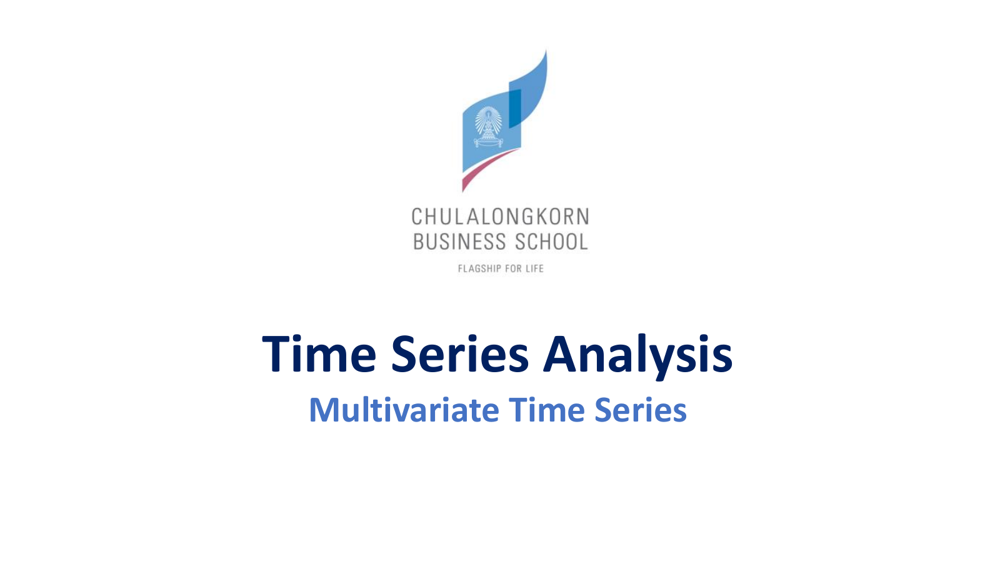
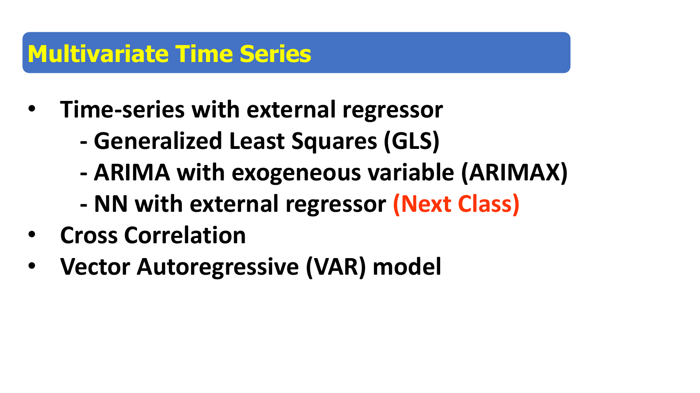
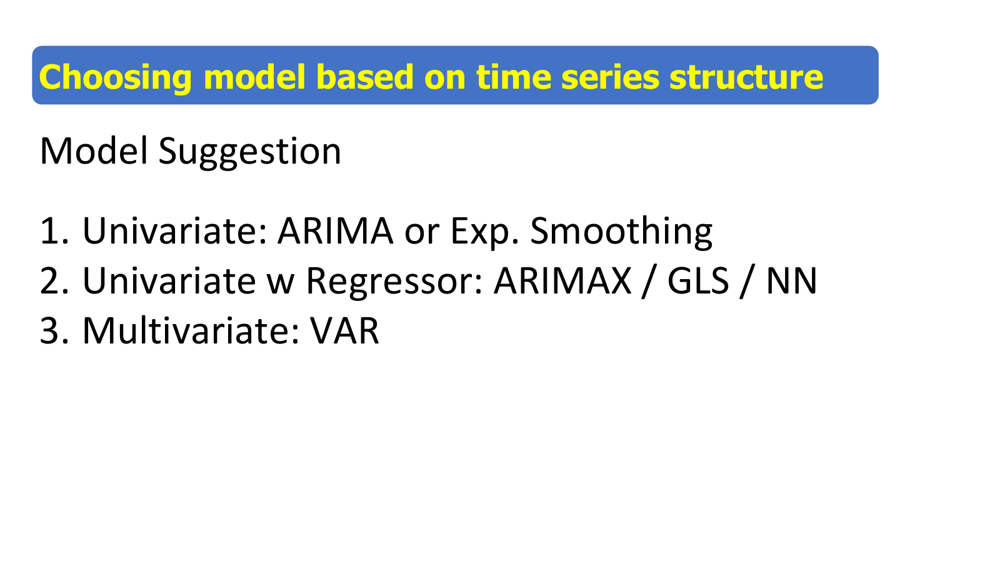

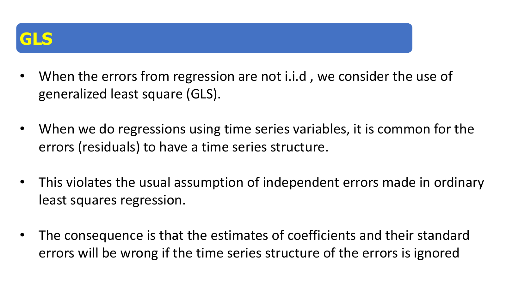

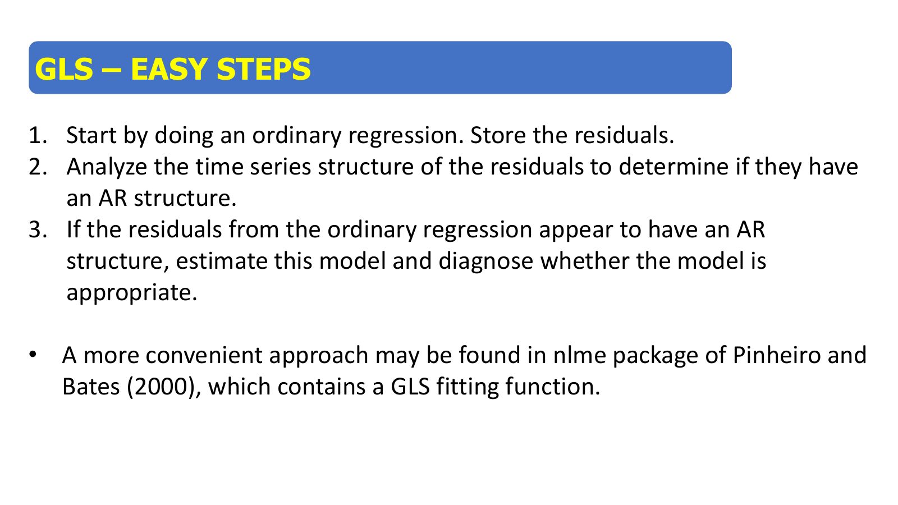
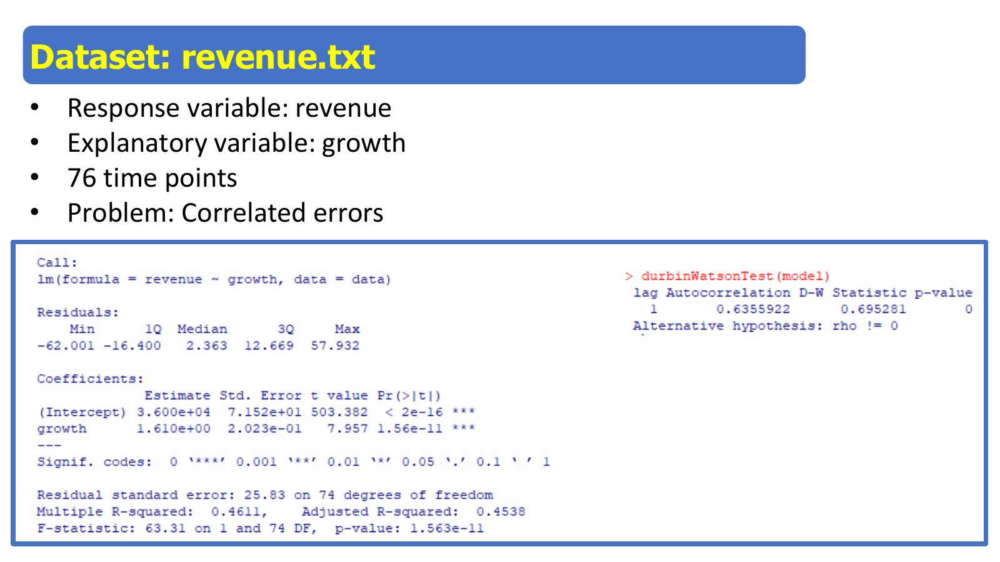
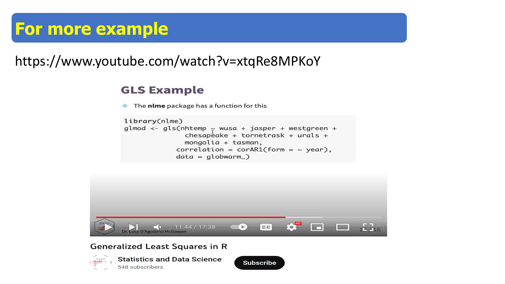
ARIMA ที่มีตัวแปรภายนอก (ARIMAX) ขยายจาก GLS โดยให้ error เป็น ARIMA ได้ทั้งหมด ไม่ใช่แค่ AR r คือจำนวนตัวแปรภายนอก ไม่ใช่พารามิเตอร์7 รูปนี้คือรูปบนกระดานและเป็นสิ่งที่ auto.arima(..., xreg = ) ทำ เรียกว่า regression with ARIMA errors
สไลด์เขียนอีกรูปหนึ่ง (Tiao และ Box 1981) \(\Phi(B)(1-B)^dY_t=\theta(B)w_t+\sum\alpha_iX_{it}\) สองรูปไม่เหมือนกันทุกประการ ในรูปของ R ค่า α คือผลของ X ต่อค่าเฉลี่ยของ Y โดยตรง ส่วนรูปบนสไลด์ ผลของ X ส่งต่อไปตามโครงสร้าง AR ด้วย
ขั้นตอนบนสไลด์และฉบับภาษาไทย (Wanida Wongwattanabundit) รวมได้ดังนี้
| ขั้น | ทำอะไร | เชื่อมกับ |
|---|---|---|
| 1 | ADF ตรวจความนิ่งของ Y และ X ตัวแปรภายนอกต้อง difference ระดับเดียวกับตัวแปรตาม | Lesson 7 ตอน 3.2 |
| 2 | Granger test คัด X ที่ส่งผลต่อ Y แต่ Y ต้องไม่ส่งผลย้อนกลับ ที่ 0.05 | ตอน 2.2 |
| 3 | หา p, q ของ error (auto.arima ทำให้) ตัดตัวแปรที่ไม่มีนัยสำคัญ | Lesson 10 |
| 4 | หลาย X: ตัดตัวที่ VIF เกิน 10 (multicollinearity) | |
| 5 | ตรวจว่า residual ไม่มี autocorrelation เหลือ | Lesson 8 |
ข้อ "Y ต้องไม่ส่งผลย้อนกลับ" สำคัญ เพราะถ้า Y ส่งผลต่อ X ด้วย X ก็ไม่ใช่ตัวแปรภายนอกจริง ควรใช้ VAR แทน
พยากรณ์ยอดขายด้วยยอดขายในอดีตอย่างเดียว แล้วลองเติมงบโฆษณาในอดีตเข้าไป ถ้าพยากรณ์ดีขึ้นจริง ก็บอกว่าโฆษณา "Granger-cause" ยอดขาย ซึ่งไม่ใช่เหตุเป็นผลในความหมายทางวิทยาศาสตร์
| Model 2 (ไม่มี X) | Model 1 (มี X) | |
|---|---|---|
| ตัวอธิบาย | lag ของ Y | lag ของ Y + lag ของ X |
| F-test ถามว่า | Model 1 ดีขึ้นอย่างมีนัยสำคัญไหม | |
H0: X does not cause Y (No Granger effect) และ H1: X causes Y8 ถ้าจะใช้ X ใน ARIMAX ต้องการ p-value ต่ำ9 ซึ่งกลับด้านกับ Ljung-Box (ตารางรวม test อยู่ใน Lesson 7 ตอน 3.2) ควรทดสอบย้อนทิศด้วย เพราะจะใช้เยอะใน VAR10
ตัวอย่างนี้มีไว้ให้เห็นว่า Granger บอกให้เลือก X กับ Y ใหม่ ไม่ใช่ปรับ α และ ARIMAX ต้องรู้ X ของช่วงที่พยากรณ์
uschange คือการเปลี่ยนแปลงเป็นร้อยละรายไตรมาสของการบริโภค รายได้ ฯลฯ ของสหรัฐฯ Y คือ consumption และใช้ income เป็น X ตัวเดียว11 (ไฟล์ไม่ได้อัปโหลด ใช้ fpp2::uschange แทน)

ทั้งสองอนุกรมแกว่งรอบค่าคงที่ เพราะเป็นร้อยละการเปลี่ยนแปลงอยู่แล้ว (เหมือน difference ของ log ใน Lesson 7 ตอน 2.4) ADF ได้ p = 0.01 จึงนิ่ง ไม่ต้อง difference12

แบ่ง test = 41 ไตรมาสสุดท้าย13 auto.arima กับ consumption อย่างเดียวได้ ARIMA(3,0,0) และ test RMSE = 0.63214 ค่านี้ใช้เป็นเกณฑ์เทียบกับ ARIMAX

| ทิศ | p-value | สรุป |
|---|---|---|
| income → consumption | 0.07491 | ไม่มีนัยสำคัญที่ 0.05 |
| consumption → income | 3.3 × 10⁻⁶ | มีนัยสำคัญ |
ผลกลับทิศกับที่ ARIMAX ต้องการ income จึงไม่ควรเป็นตัวแปรภายนอกของ consumption15 และสไลด์ก็เขียนว่าอาจพิจารณาให้ income เป็นตัวแปรตามในอนาคต
สไลด์เขียนต่อว่า "but does cause at 10%, so lets continue our analysis" แนวทางนี้ผิด การเปลี่ยน α หลังเห็นผลคือ "การแก้แบบโง่ ๆ"1617 ปัญหาจริงคือเลือก X กับ Y ผิด ต้องเริ่มจาก literature review เพราะ data science และสังคมศาสตร์ควบคุมปัจจัยด้วย Design of Experiment ไม่ได้ ต้องพึ่งทฤษฎีจากงานก่อน18 ตัวอย่างนี้ทำต่อเพื่อสาธิตโค้ดเท่านั้น
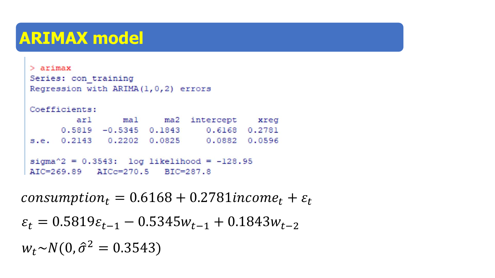
สไลด์เขียนสมการสามบรรทัดจาก output ของ auto.arima ที่มี xreg ซึ่งต้องเขียนให้เป็น19
auto.arima(con_training, xreg = inc_training): Regression with ARIMA(1,0,2) errors ar1 = 0.5819, ma1 = −0.5345, ma2 = 0.1843, intercept = 0.6168, xreg = 0.2781, σ² = 0.3543
\(\mathrm{consumption}_t=0.6168+0.2781\,\mathrm{income}_t+\varepsilon_t\) "intercept = 0.6168, xreg = slope หน้า income"
\(\varepsilon_t=0.5819\varepsilon_{t-1}-0.5345w_{t-1}+0.1843w_{t-2}+w_t\)
\(w_t\sim N(0,\hat\sigma^2=0.3543)\)

การพยากรณ์ต้องส่ง income ของช่วง test เข้าไปด้วย forecast(arimax, xreg = inc_test)21 และถ้า Y ถูก difference แล้ว X ต้อง difference ด้วย22 test RMSE = 0.596 ต่ำกว่า ARIMA (0.632) เล็กน้อย23 อีกวิธีเทียบคือ F-test แบบเอา X ออก24
โค้ดเรียก accuracy(con_test, forec_test$mean) แต่ forecast::accuracy() รับค่าพยากรณ์ก่อน ค่าจริงทีหลัง ME และ MPE จึงกลับเครื่องหมาย (output ได้ ME = +0.4197 ที่จริงควรเป็น −0.4197) ส่วน RMSE และ MAE ไม่เปลี่ยน เป็นกับดักเดียวกับที่พบใน Lesson 2


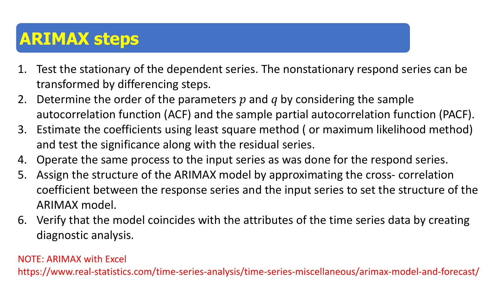
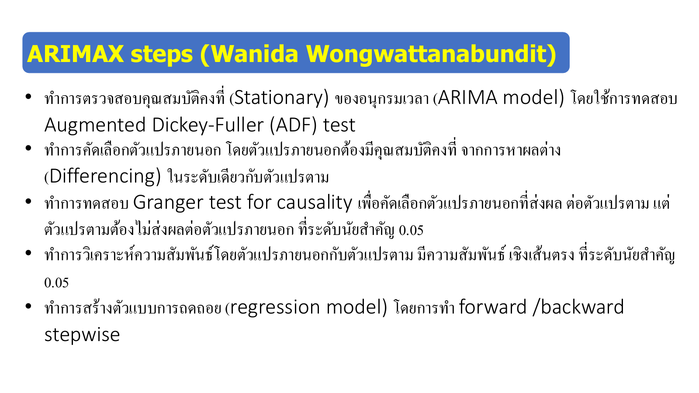


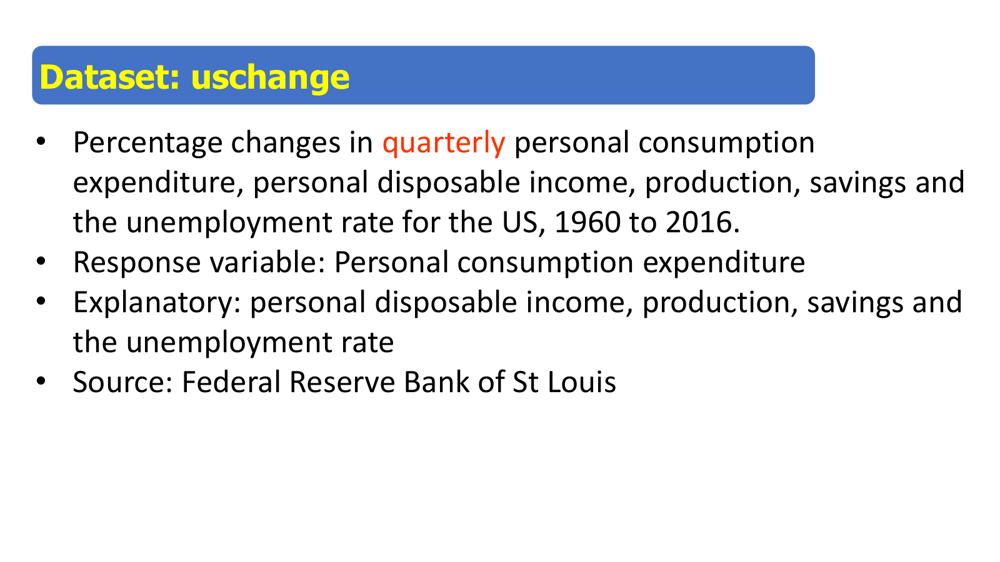
แนวคิดของ Mixed Data Sampling (MIDAS) regression ไม่มีโค้ดและไม่ได้ลงรายละเอียดในคลิป ใช้เมื่อ Y กับ X เก็บด้วยความถี่ต่างกัน เช่น GDP รายไตรมาสกับยอดค้าปลีกรายเดือน แทนที่จะเฉลี่ย X สามเดือนให้เป็นรายไตรมาสแล้วเสียข้อมูล MIDAS ใส่ค่ารายเดือนทั้งสามค่าเป็นตัวอธิบาย แต่ละค่ามีน้ำหนักของตัวเอง
ACF วัดอนุกรมกับอดีตของตัวเอง CCF ขยายไปวัดสองอนุกรมที่ lag ต่าง ๆ เป็นแค่เครื่องมือสำรวจข้อมูล ไม่ใช่โมเดลหลัก25 ใช้ช่วยตัดสินว่าควรใส่ X ที่ lag ไหน
| ACF (Lesson 3) | CCF | |
|---|---|---|
| lag k กับ −k | เท่ากัน | ไม่เท่า เพราะลำดับของอนุกรมมีผล26 |
| แกนนอน | lag ≥ 0 | มีทั้ง lag ลบและบวก |
| k = 0 | 1 เสมอ | Pearson correlation ของคู่เวลาเดียวกัน |
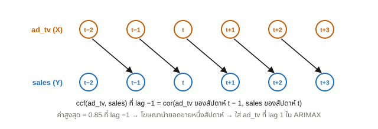
ใน R ccf(x, y) ค่าที่ lag k คือ cor(x[t+k], y[t]) lag ลบจึงหมายถึง x ในอดีตเทียบกับ y ปัจจุบัน ภาพนี้คือ lag −1 ซึ่งลูกศรทุกเส้นจับคู่ X หนึ่งช่วงก่อนกับ Y

Bsales มี 100 สัปดาห์ Y = sales ตัวอธิบายคือ ad_tv, ad_online และ discount ccf ของ ad_tv กับ sales สูงสุดที่ lag −1 (0.848) ad_online มีรูปแบบเดียวกัน ส่วน discount ไม่มีแท่งเด่นที่ lag ใด27
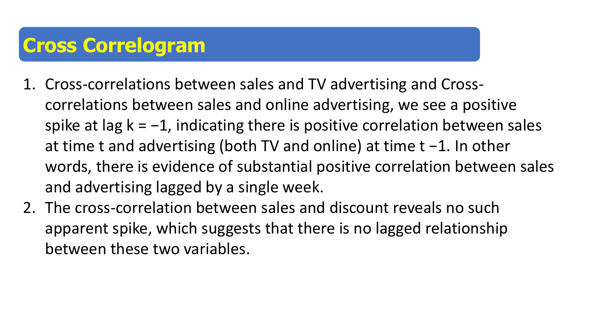
ข้อสรุปคือยอดขายสัมพันธ์กับโฆษณาของสัปดาห์ก่อนมากที่สุด สมเหตุสมผลเพราะลูกค้าต้องใช้เวลาตัดสินใจหลังเห็นโฆษณา ถ้าจะทำ ARIMAX จึงควรใส่ ad_tv ที่ lag 1 เป็นตัวอธิบาย28

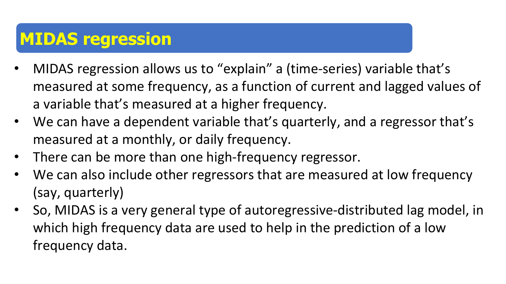
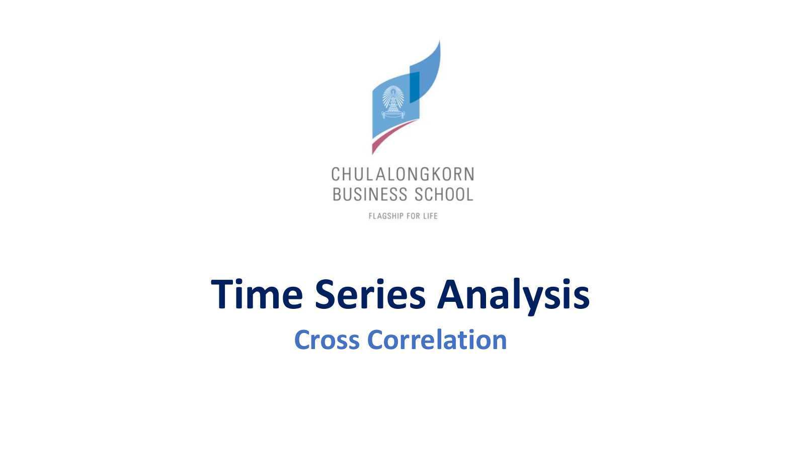
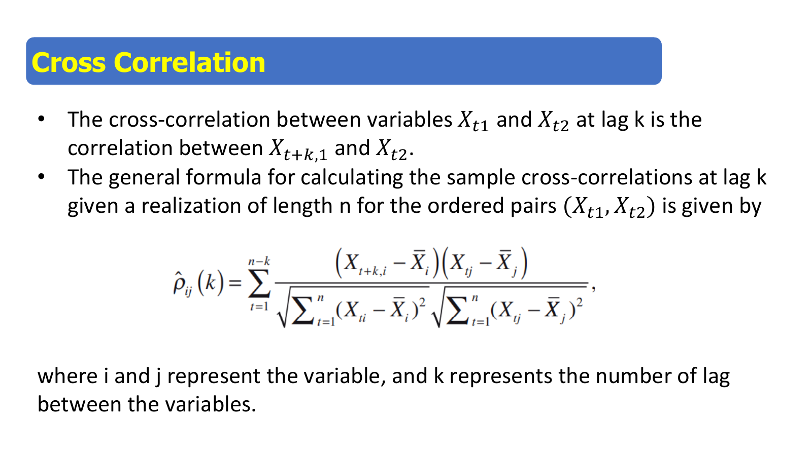
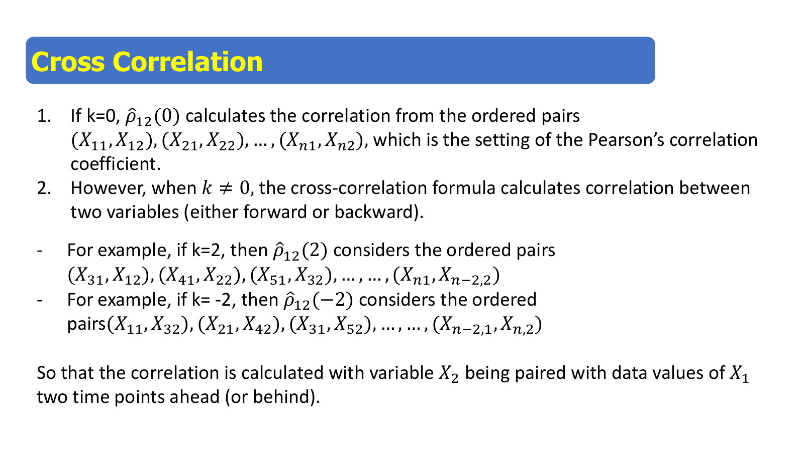
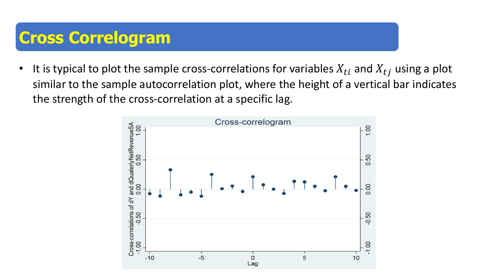
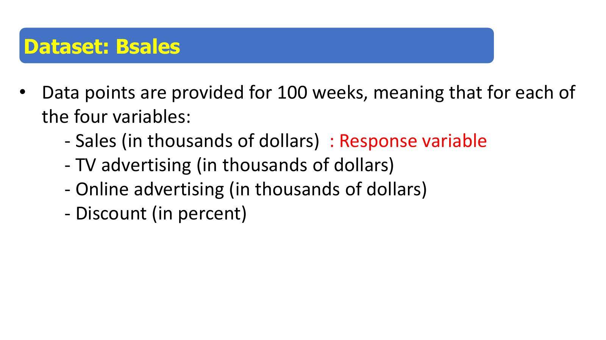
VAR คือ "simultaneous model"29 แต่ละสมการคือ AR ของตัวเองบวก lag ของตัวอื่น VAR ที่เรียนมีแค่ AR term ไม่มี MA30 error สองสมการมี covariance matrix ที่มี Var(w₁), Var(w₂) และ Cov(w₁, w₂)31
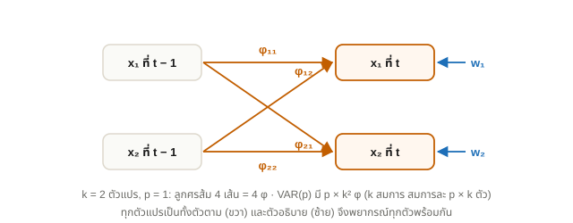
ลูกศรส้มแต่ละเส้นคือ φ หนึ่งตัว เช่น φ₁₂ = 0.5 แปลว่า x₂ สัปดาห์ก่อนเพิ่ม 1 หน่วย ทำให้ x₁ สัปดาห์นี้เพิ่ม 0.5 หน่วย ต่างจาก ARIMAX ที่ลูกศรวิ่งจาก X ไป Y ทางเดียว และ VAR ไม่ต้องรู้ X ของอนาคตเพราะพยากรณ์ทุกตัวพร้อมกัน
k ตัวแปร VAR(p) มี k สมการ แต่ละสมการมี φ จำนวน p × k ตัว ถ้ามีค่าคงที่ (type = "const") บวกอีก 1 ต่อสมการ
VAR(1): 2 ต่อสมการ รวม 4 · VAR(2): 4 ต่อสมการ รวม 8 · VAR(3): 6 ต่อสมการ รวม 12
9 × 4 = 36 ต่อสมการ รวม 144 φ
5 × 2 + 1 = 11 ต่อสมการ ข้อมูลที่ใช้ได้มีแค่ 20 − 5 = 15 แถว เหลือ df = 15 − 11 = 4 ตรงกับ "on 4 degrees of freedom" ใน output
| เกณฑ์ใน VARselect | คือ |
|---|---|
| AIC | ตัวเดียวกับ Lesson 7 ตอน 3.3 |
| SC (Schwarz) | BIC34 ค่าปรับหนักกว่า มักได้ p เล็กกว่า |
| HQ (Hannan-Quinn) | ค่าปรับอยู่ระหว่าง AIC กับ BIC |
| FPE | final prediction error |
สี่เกณฑ์อาจให้ p ต่างกันมาก "Results might vary hugely" อาร์กิวเมนต์ type มีสามแบบ "none" มีแต่ φ, "const" มี intercept และ "both" มี intercept และ trend35 และขั้นแรกต้องเช็คความนิ่งก่อน
ตัวอย่างนี้มีไว้ให้เห็นว่า lag ที่ CCF ชี้ คือ lag ที่สัมประสิทธิ์ใน VAR จะมีนัยสำคัญ

var1 เป็นข้อมูลจำลองที่ออกแบบให้เห็นโครงสร้างชัด โค้ดใช้ 20 แถวแรก ccf(data$x1, data$x2) สูงสุดที่ lag 5 (0.835) คือ x2 นำ x1 อยู่ 5 ช่วง จึงคาดว่าในสมการของ x1 สัมประสิทธิ์หน้า lag 5 ของ x2 จะมีนัยสำคัญ36

บนสไลด์ได้ AIC = HQ = SC = 5 และ FPE = 637 สอดคล้องกับ CCF จึงเลือก VAR(5) แถว lag 6 เป็น NaN เพราะข้อมูล 20 แถวไม่พอประมาณ 13 พารามิเตอร์ต่อสมการ
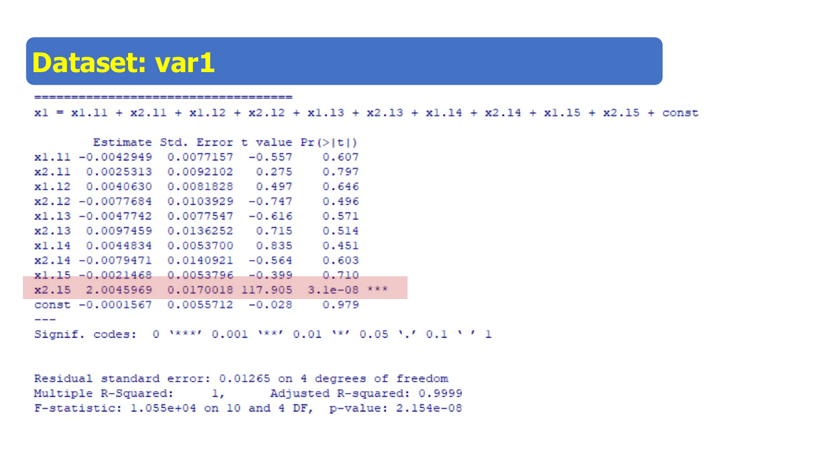
สมการ x1 มีตัวเดียวที่มีนัยสำคัญคือ x2.l5 = 2.0046 (t = 117.9)38 จึงสรุปได้ว่า \(x_{1,t}\approx2x_{2,t-5}\) ตรงกับที่ CCF ชี้
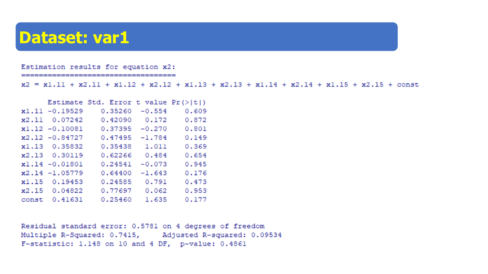
สมการ x2 ไม่มีตัวไหนมีนัยสำคัญ x2 จึงแทบเป็น noise predict(fit, n.ahead = 5) ให้ fcst, lower, upper แยกแต่ละตัวแปร39 x1 พยากรณ์ได้แม่นแม้ x2 จะเดาไม่ได้ เพราะ x1 ห้าก้าวถัดไปคือสองเท่าของ x2 ที่สังเกตแล้วเมื่อ 5 ช่วงก่อน
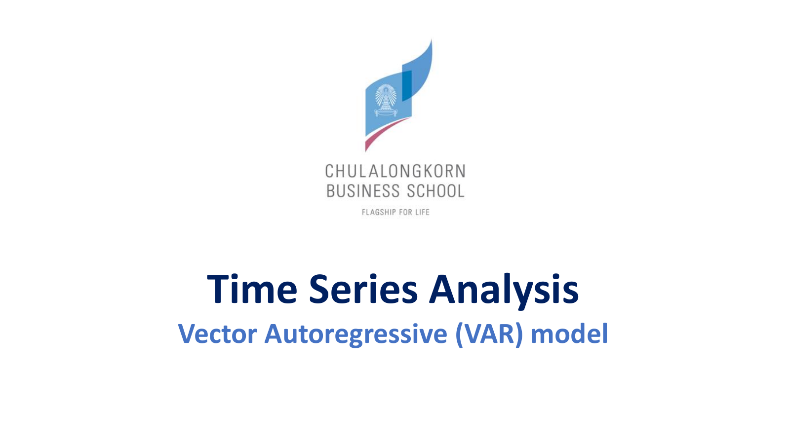

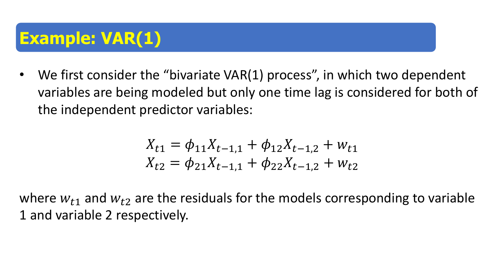
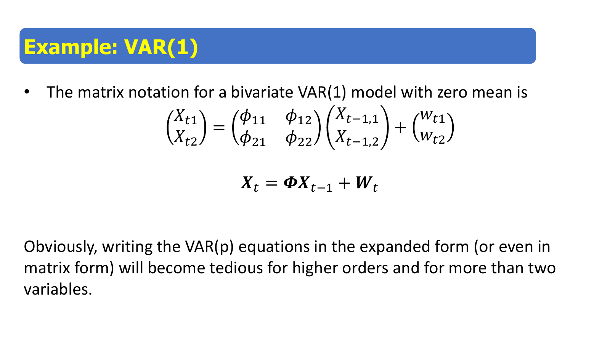
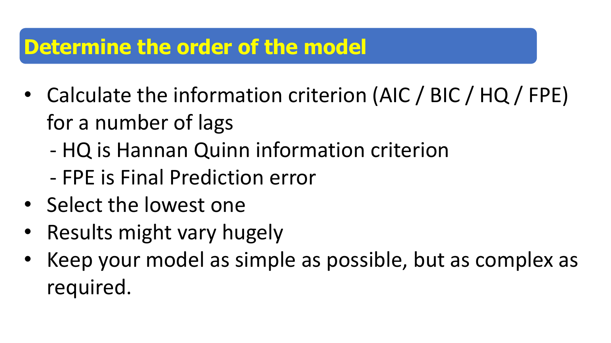

| ตรวจอะไร | ใน R | H0 | อยากได้ p | คู่ใน univariate |
|---|---|---|---|---|
| ความนิ่งทุกคอลัมน์ | apply(data, 2, adf.test)40 | ไม่นิ่ง | ต่ำ | ADF (Lesson 7) |
| residual random | serial.test() (portmanteau) | residual อิสระ = โมเดลเหมาะสม | สูง | Ljung-Box (Lesson 8) |
| ตัวแปรไหนตัดได้ | causality(var, cause = ...) | ไม่ Granger-cause ตัวอื่น | ต่ำ (จึงเก็บไว้) | Granger ตอน 2.2 |
ตัวแปรใน VAR ต้องเป็น endogenous คือส่งผลต่อกัน ถ้ามีตัวที่ไม่ได้รับผลจากตัวอื่นเลย ควรใช้เป็น exogenous แบบ ARIMAX portmanteau มี H0 = residual random = โมเดลเหมาะสม p ต่ำคือไม่ผ่าน41 ส่วน causality() ให้สองผล ให้ดูเฉพาะ Granger4243
ตัวอย่างนี้มีไว้ให้เห็นว่า ข้อมูลที่ไม่นิ่งต้อง difference ก่อนเข้า VAR และ serial.test ที่ไม่ผ่านบอกให้เปลี่ยน p
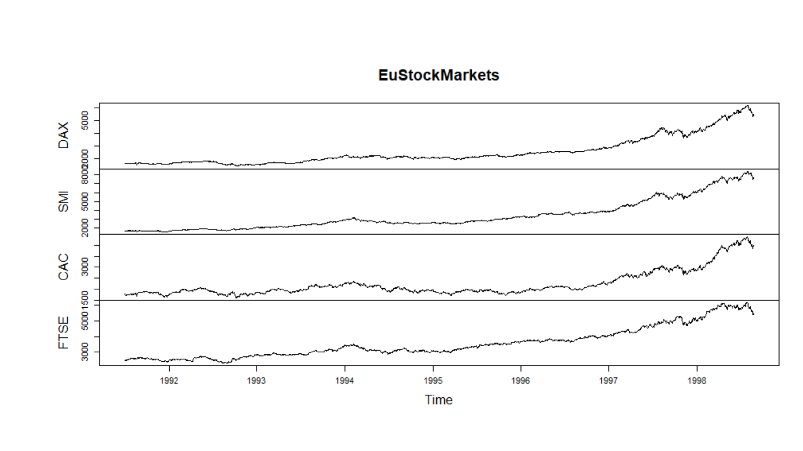
ราคาปิดรายวันของ DAX, SMI, CAC และ FTSE มี trend ขาขึ้นทั้งหมด ADF ไม่นิ่งทุกตัว จึงใช้ stnry = diff(EuStockMarkets) แล้ว ADF ทุกตัวได้ p = 0.0144 VARselect ได้ AIC = 9 แต่ SC = 1 สไลด์เลือก p = 9 เพราะ AIC "is the most popular one"
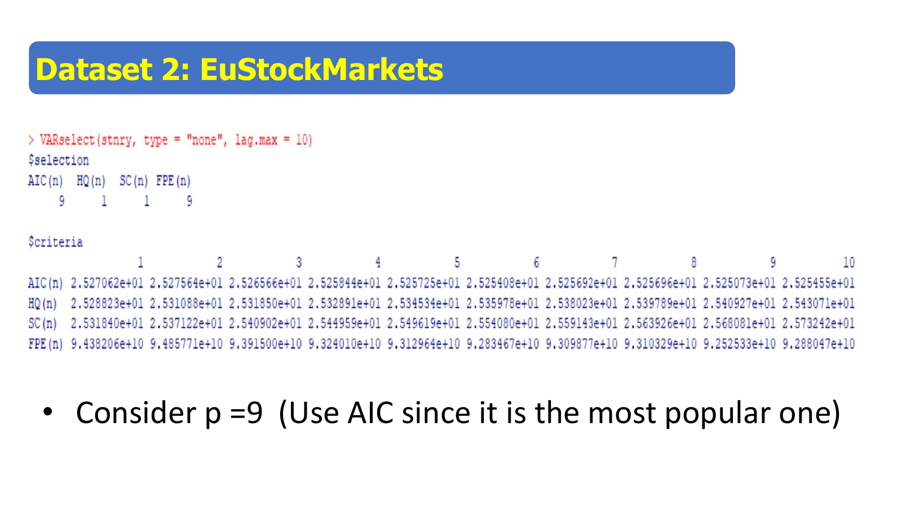
vars::VAR(stnry, lag.max = 10, ic = "AIC", type = "none") ได้ 36 สัมประสิทธิ์ต่อสมการ รวม 144 ตัว ใช้ type = "none" เพราะผลต่างของราคามี mean ใกล้ศูนย์
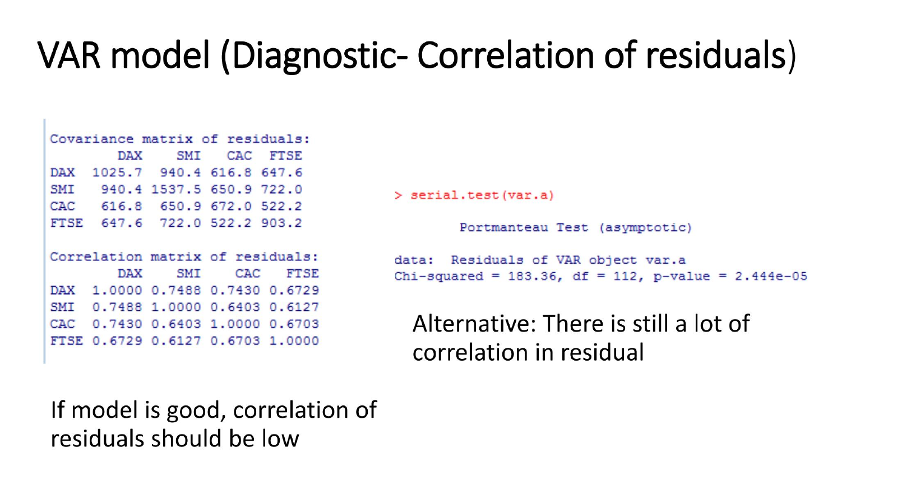
residual ของ DAX กับ SMI มี correlation 0.749 แปลว่า shock ในวันเดียวกันเกิดพร้อมกันทั้งยุโรป serial.test ได้ p = 2.4 × 10⁻⁵ จึงปฏิเสธ H0 residual ยังมี autocorrelation เหลือ อาจต้องเปลี่ยน p45 สไลด์ใช้ VAR(9) ต่อ และการบ้านคือลอง p = 146
ในคลิปช่วงหนึ่งพูดว่า "อยากให้ p-value ต่ำ ๆ" ซึ่งขัดกับ H0 แล้วสรุปถูกว่า p ต่ำคือไม่ผ่าน ทางเลือกเมื่อ residual ยังสัมพันธ์คือเปลี่ยน p, เปลี่ยน type หรือใช้ log ก่อน difference (ราคาหุ้นมักใช้ผลต่างของ log คือผลตอบแทน ตาม Lesson 7 ตอน 2.4)
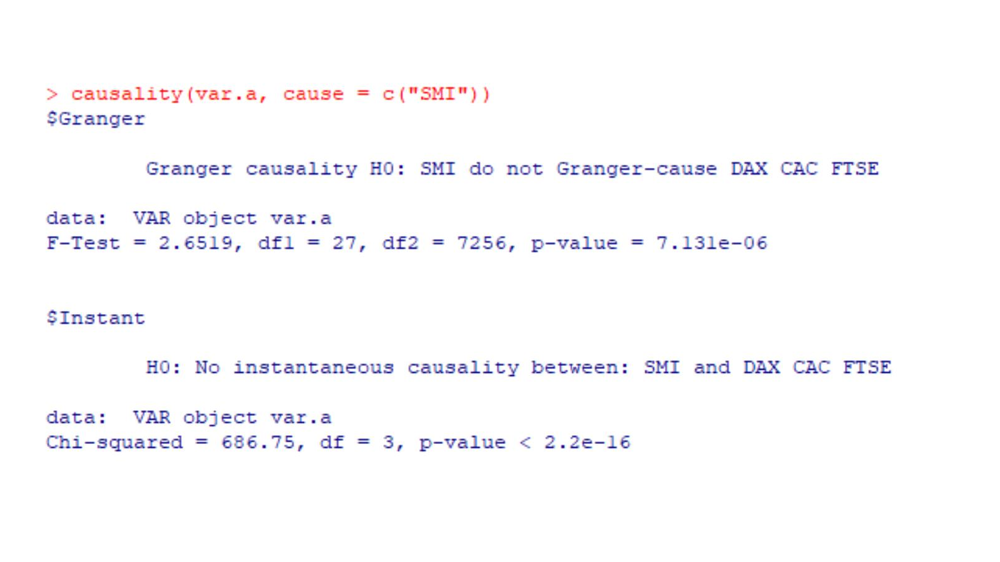
Granger ของทั้งสี่ดัชนีมี p ต่ำกว่า 0.05 ทุกตัว (เช่น SMI p = 7.1 × 10⁻⁶) จึงไม่ตัดตัวไหน47 df1 = 27 คือ 9 lag × 3 ตัวแปรอื่น ส่วน $Instant ที่สูงมากสะท้อน correlation ของ residual วันเดียวกันที่เห็นข้างบน
predict(var.a, n.ahead = 25) ได้สี่ดัชนีพร้อมกัน แต่เป็นค่าของผลต่าง ต้อง undifference เอง48 กับดักเดียวกับ Lesson 8 ตอน 2.4 แต่ VAR ไม่มีทางเลือก "ใส่ d ในคำสั่ง" ทางเลี่ยงคือ type = "both" ในตอน 6
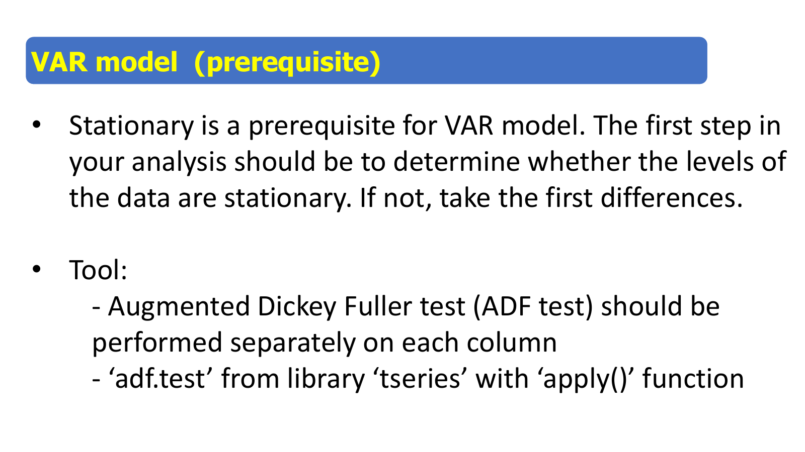
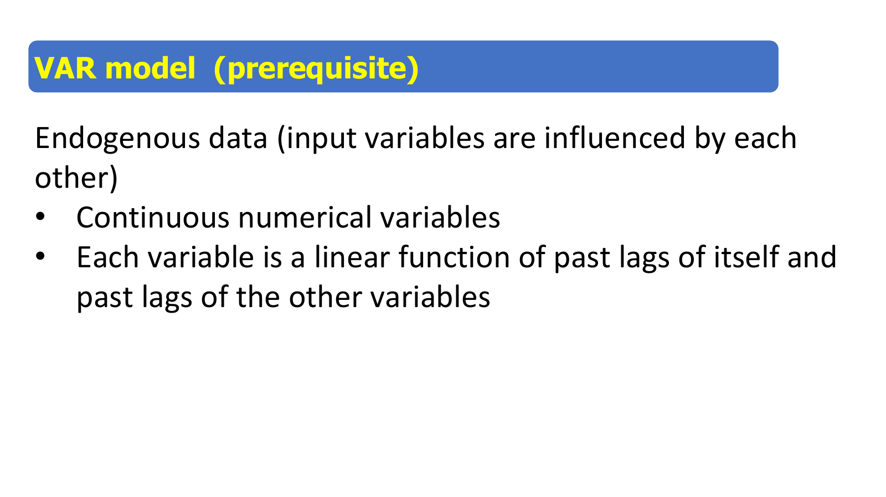


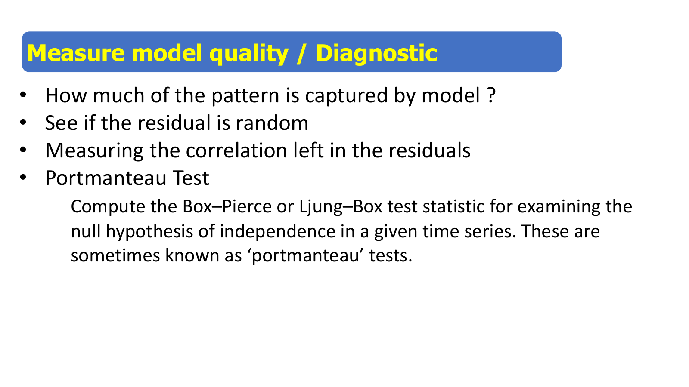
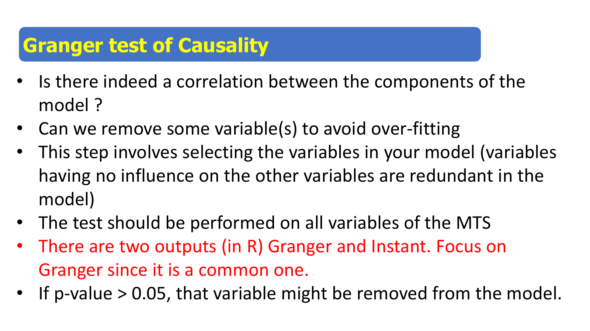
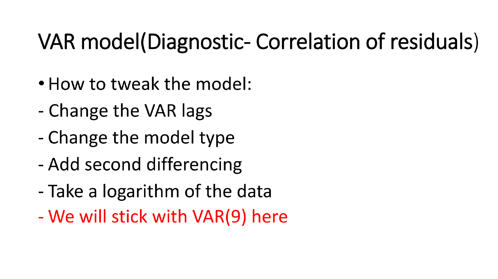
ตัวอย่างนี้มีไว้ให้เห็นว่า VAR จัดการ trend และ seasonal ได้โดยไม่ difference และ AIC กับ RMSE อาจเลือกโมเดลไม่ตรงกัน
cardiac จาก package tswge คืออัตราการเสียชีวิตจากโรคหัวใจ (cmort), อุณหภูมิ (tempr) และมลพิษอนุภาค (part) รายสัปดาห์ มี trend และ seasonal 52 สัปดาห์49
| อาร์กิวเมนต์ | ใส่อะไรเข้าไปในทุกสมการ | แทนที่ |
|---|---|---|
type = "both" | intercept + slope × t50 | difference (d) |
season = 52 | dummy 51 ตัวต่ออนุกรม เพื่อให้แต่ละสัปดาห์มี mean ของตัวเอง (sd1–sd51) สัปดาห์สุดท้ายคือ dummy ทุกตัวเป็น 0 เพราะ 52 ตัวจะซ้อนกับค่าคงที่51 | seasonal difference (D) |
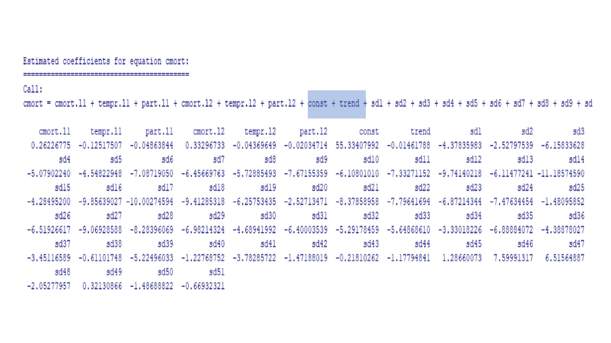
output แสดงสัมประสิทธิ์ของสมการ cmort ทั้งหมด ส่วนที่ไฮไลต์คือค่าคงที่และ trend ที่มาจาก type = "both"
const = 55.334, trend = −0.01462 ต่อสัปดาห์ (อัตราเสียชีวิตลดลงช้า ๆ)
cmort.l1 = 0.2623, tempr.l1 = −0.1252, part.l1 = −0.0486, cmort.l2 = 0.3330, tempr.l2 = −0.0437, part.l2 = −0.0203
\(\mathrm{cmort}_t=55.334-0.0146t+0.2623\,\mathrm{cmort}_{t-1}-0.1252\,\mathrm{tempr}_{t-1}-0.0486\,\mathrm{part}_{t-1}+0.3330\,\mathrm{cmort}_{t-2}-0.0437\,\mathrm{tempr}_{t-2}-0.0203\,\mathrm{part}_{t-2}-4.378\,sd_1-\dots-0.669\,sd_{51}+w_t\)
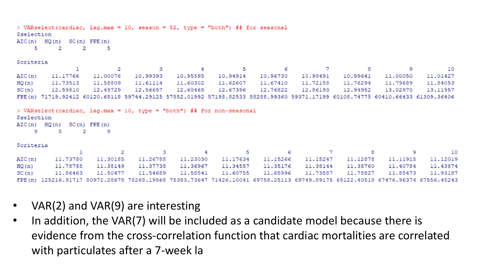
VARselect เสนอ p = 2 และ 9 สไลด์เพิ่ม VAR(7) เพราะ CCF บอกว่า cmort สัมพันธ์กับ part ที่ lag 7 สัปดาห์55 แล้วแบ่ง train/test (test 52 สัปดาห์สุดท้าย)
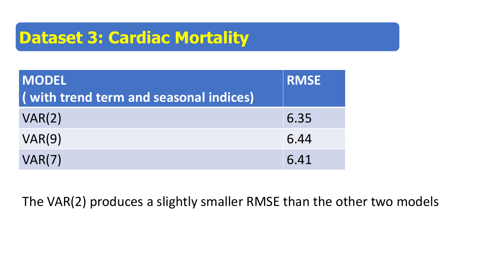
แบบมี seasonal dummy RMSE ของสามโมเดลใกล้กัน (6.35–6.44) และ VAR(7) แบบนี้ไม่ผ่าน Ljung-Box
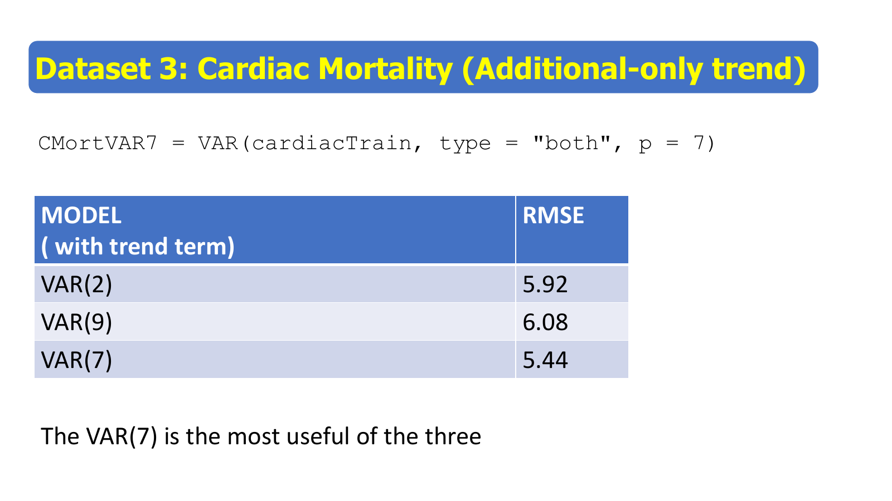
เมื่อตัด seasonal dummy RMSE ดีขึ้นทุกโมเดล และ VAR(7) ดีที่สุด (5.44) แปลว่า lag 7 ของมลพิษช่วยพยากรณ์จริง และ dummy 51 ตัวต่อสมการอาจทำให้ overfit

| VAR(7) trend | VAR(2) trend + seasonal | |
|---|---|---|
| AIC | 11.15 | 11.00 |
| BIC | 11.73 | 12.49 |
| test RMSE | 5.44 | 6.38 |
สไลด์สรุปว่า เกณฑ์เหล่านี้ไม่ได้บอกว่าโมเดลไหน "ถูก" หรือแม้แต่ "ดีกว่า" AIC ใช้เทียบ VAR ด้วยกันได้ "ระดับหนึ่ง" แต่ห้ามเทียบข้ามตระกูล56 (Lesson 10 ตอน 3.2) และเมื่อ AIC กับ test RMSE ขัดกัน ให้เชื่อความแม่นยำของการพยากรณ์ ซึ่งคือสิ่งที่ต้องการจริง


ไฟล์ R_codes.txt, revenue.txt, Bsales.txt และ var1.txt อยู่ในโฟลเดอร์ CLASS 10 ใช้ package forecast, tseries, lmtest, vars, nlme, car และ tswge ส่วน uschange ใช้ fpp2::uschange ลองฝึกต่อในแบบฝึก Lesson 11 หรือกลับไปที่สารบัญ
ตัวเลขยกในเนื้อหาชี้มาที่รายการนี้ แต่ละรายการระบุคลาสและนาทีของคลิป พร้อมถ้อยคำในคลิปเมื่อมี
| หน้า | เนื้อหา | อยู่ในตอน |
|---|---|---|
| 1–16 | auto.arima, ETS, tsCV | etc — สอนใน Lesson 10 |
| 17–26 | Multivariate time series, GLS และ revenue | ตอน 1 |
| 27–39 | ARIMAX และขั้นตอน, Granger, uschange | ตอน 2 |
| 40–48 | MIDAS, cross-correlation และ Bsales | ตอน 3 |
| 49 | VAR (หน้าคั่น) | ตอน 4 |
| 50 | เลือกโมเดลตามโครงสร้าง | ตอน 1 |
| 51–59 | VAR, VAR(1), การเลือก p, var1 | ตอน 4 |
| 60–70 | เงื่อนไข VAR และ EuStockMarkets | ตอน 5 |
| 71–77 | Cardiac Mortality | ตอน 6 |
แหล่งอื่นที่ใช้: Class 10 ช่วง 0:00–2:13 (ตอน 1–6), ไฟล์ R_codes.txt, revenue.txt, Bsales.txt และ var1.txt (CLASS 10), fpp2::uschange, tswge::cardiac